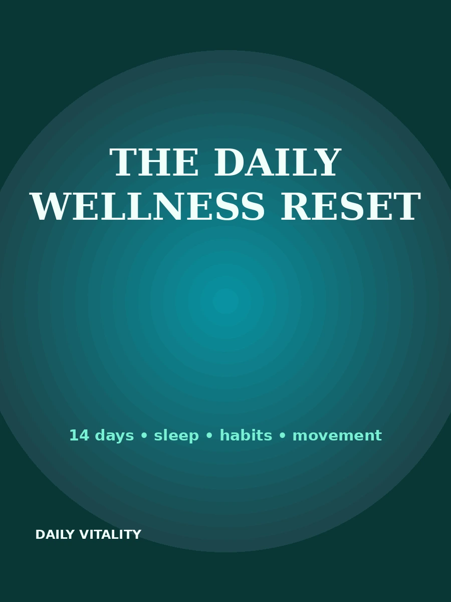

The Daily Wellness Reset
Welcome
The Daily Wellness Reset is a short, practical reading experience. It is designed to help you simplify—not perfect—your daily routine. Use one small action at a time.
Day 1 — Pick your anchors
Choose a wake time, a first meal or drink, and a short movement window. These anchors give your day structure without filling every minute.
Day 2 — Make sleep easier
Protect enough time for sleep, keep your wake time reasonably consistent, and create a short wind-down. Avoid turning sleep into a performance test.
Day 3 — Build a better breakfast
Combine a protein food with a fiber-rich plant food. Examples include yogurt and berries, eggs and whole-grain toast, or oats with nuts and fruit.
Day 4 — Add movement
Use a ten-minute walk as your minimum. If you feel good, extend it. The aim is repeatability.
Day 5 — Hydration cue
Put water where you can see it. Link drinking to existing cues such as meals, leaving home and returning to your desk.
Day 6 — Reduce friction
Put walking shoes by the door. Keep simple foods visible. Make the healthy choice the easy choice.
Day 7 — Review, don’t judge
Write down what worked, what felt difficult and what you want to keep. A routine should fit your life.
Days 8–14 — Repeat and refine
Repeat your best habits. Add only one new behavior at a time. If a habit keeps failing, change the system before blaming yourself.
Closing
Health is not a 14-day challenge that ends. The reset is simply a way to make the next ordinary day a little easier.